iTest User's Guide
Data Log Browser is an application that enables you to graph and analyze logged test data. The application can display data at up to 100 kHz resolution, and it is used primarily for .dat files and .mf4 files. Data files and folders are organized in a tree view. When you select a data file from the list, the data file's header information and parameters are loaded into Data Log Browser. You can then select which parameters you want to display in the chart, view plotted data, evaluate various data points, and play back video.
Data Log Browser
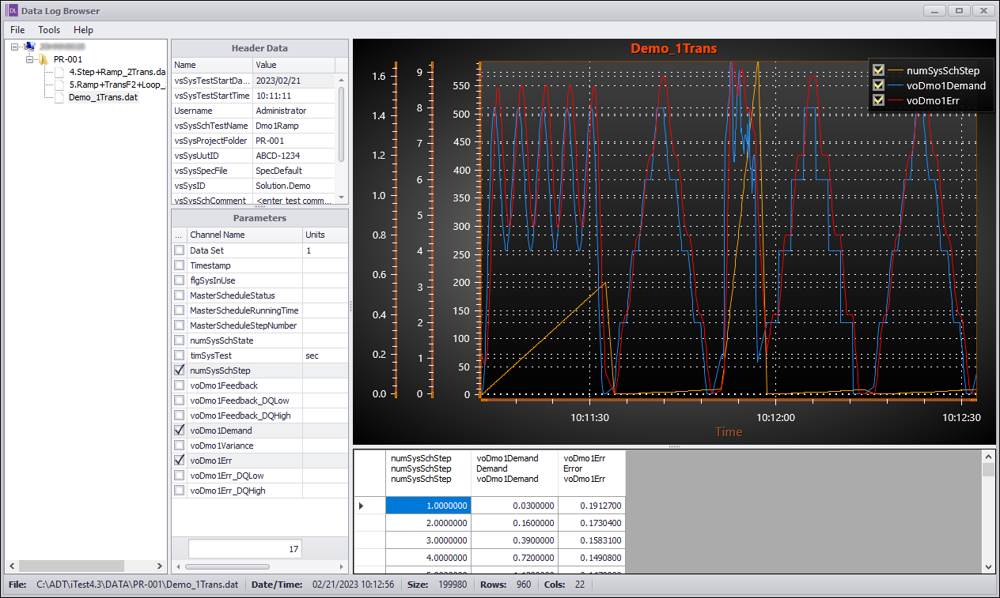
Data Log Browser can be accessed from the installation folder, AutomationPanel, or by searching in the Windows search bar.
To open Data Log Browser from AutomationPanel, use one of the following two options:
There are five different sections in Data Log Browser application, including Tree Node, Header Data, Parameters, Results, and Chart.
Interface Layout
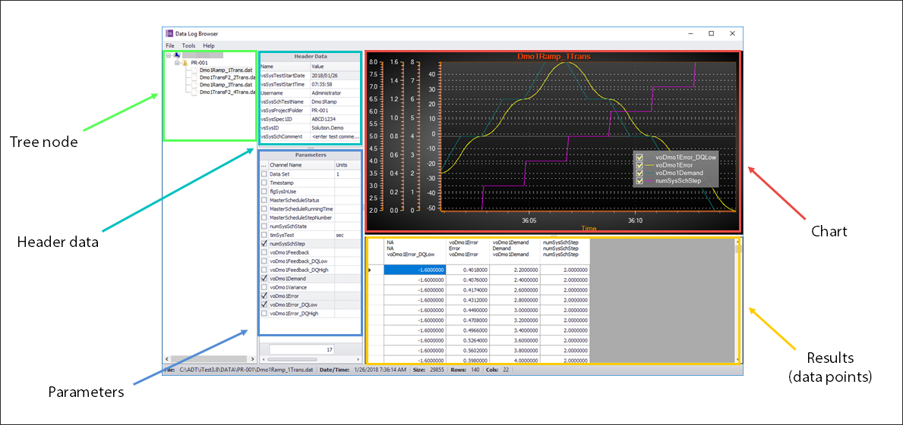
Section Descriptions
| Section | Description |
| Tree node | A structured list of project folders. The project folders contain data files from tests run at the test station. |
| Header data | The header data for a selected data file, including channels and their values. |
| Parameters | A list of channels logged in the selected data file. |
| Chart | The interface for displaying channel data. |
| Results | The data points for the channels displayed in the chart. Only channels selected in the parameters section display in the results section. |
To modify properties, select Tools > Properties from the menu bar. This opens the Property Manager dialog.
Property Manager
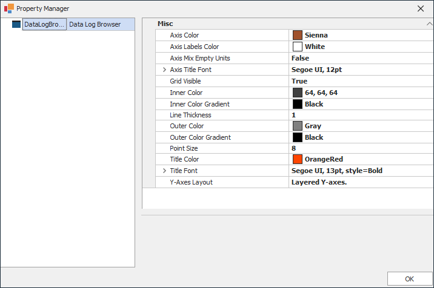
Property Descriptions
| Property | Description |
| Axis Color | Changes the color of the axis and its title. |
| Axis Labels Color | Changes the color of the axis ticks, labels, and grid lines. |
| Axis Mix Empty Units | When set to FALSE, only channels with the same units can be moved onto the same Y-axis in the Data Log Browser. When set to TRUE, channels with blank units can ignore this restriction and be moved onto any Y-axis in the Data Log Browser. When Data Log Browser closes, this value is saved to the $EXECUTEDIR\DataLogBrowser.xml file. In addition, this setting can be changed during runtime. If the legacy DLBAxisMixEmptyUnits config.ini setting exists, then Data Log Browser will refer to that setting's value before using the value from the $EXECUTEDIR\DataLogBrowser.xml file. The DLBAxisMixEmptyUnits setting will then be removed from the config.ini file. |
| Axis Title Font | Changes the font for axis titles. |
| Grid Visible | True shows the grid for the axis, False hides the grid. |
| Inner Color | Background color for all content inside the chart. |
| Inner Color Gradient | Creates a gradient for the background of all content inside the chart. |
| Line Thickness | Changes the thickness of the lines on the chart. |
| Outer Color | Background color for the area outside of the chart. |
| Outer Color Gradient | Creates a gradient for the background of the area outside the chart. |
| Point Size | Changes the size of the data points on the chart. |
| Title Color | Changes the color of the chart title. |
| Title Font | Changes the font of the chart title. |
| Y-Axes Layout | Method of arranging multiple Y-Axes (Layered or Stacked). |
To view logged data in Data Log Browser, do the following:
| Right-Click Option | Description |
| Sort by Name | Sorts all project folders and data files by name in ascending order. |
| Sort by Date | Sorts all project folders by date in descending order. A project folder's date is determined by the date of its latest data file. |
| Find... | Opens the Find dialog which allows searching for projects and files by name. To use the Find dialog, enter the search term and click Find Next. The first file or folder that contains the search term will be displayed in DataLogBrowser. Clicking Find Next again will show the next result and so on. When reaching the end of the search results, a notification will display before searching starts over from the top of the list. Search results will be sorted based on the configuration given (Sort by Name or Sort by Date). |
The Data Log Browser supports viewing MDF multi-rate files. Viewing is handled just as any other data log file with the Parameters section listing the channels from the MDF multi-rate file.
When the .mf4 file is selected, a temporary file with the same name and ending with a .tmp file extension is created. This file is formatted as a DAT file and only exists while the MF4 file is selected for viewing. Its contents will reflect the logged data points, with repeated values listed to fill the gaps for the slower rates.
Example of Viewing a MDF Multi-rate File
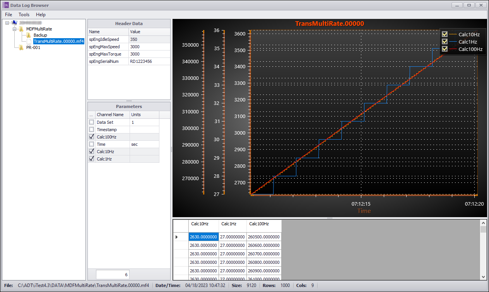
After selecting parameters for a data file, the data file can be exported with the specified parameters. To export a customized data file, select File > Export Data File from the main menu.
Export Data File
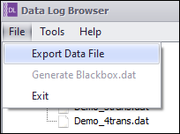
The data file will be exported to the project folder and appears in the Data Log Browser with the specified parameters. In the example below, the customized data file had the following parameters selected: Timestamp, timSysTest, MasterScheduleStatus, and voDmo1Err.
New Customized Data File
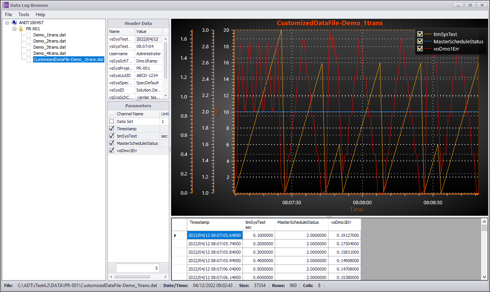
Blackbox data files can be generated using the File > Generate Blackbox.dat option in the Data Log Browser. This option allows the user to generate a Blackbox.dat file based on the block1 file contents and overwrite the existing Blackbox.dat file. The block1 file consists of Blackbox binary data that is transferred into ASCII text via the Generate Blackbox.dat option; this file can be found in the $DATADIR.
Generate Blackbox.dat
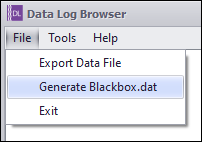
 |
NOTE: | To enable the Generate Blackbox.dat option, the CRS_CONTROL value must be 0 and the block1 file size must be greater than 0kb. |
Blackbox.dat View
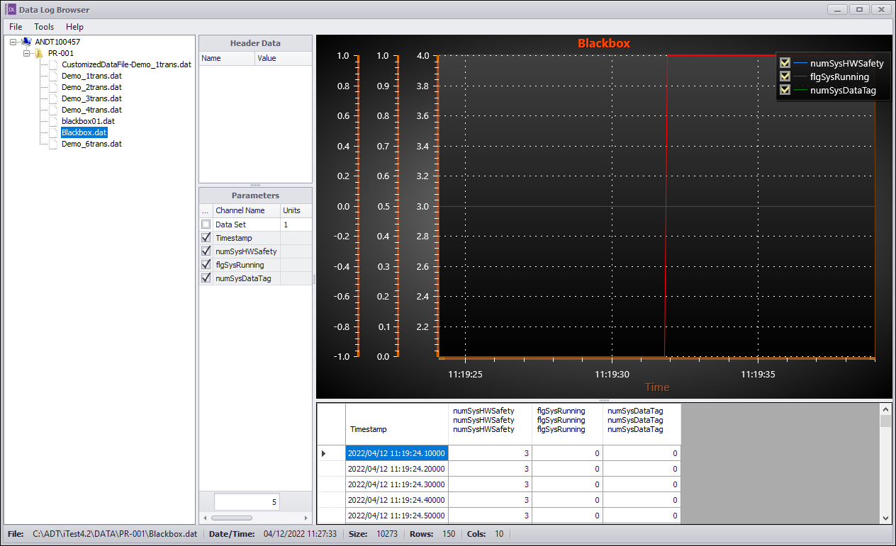
Additional Blackbox.dat files may appear in the Data Log Browser if automatic Blackbox logging is enabled or the GenericMsg SaveBlackBox Data Engine mailslot is used. The additional Blackbox.dat files use the following naming convention: blackbox<number>.dat, where the <number> is the instance of the Blackbox.dat file (e.g., Blackbox01.dat). If Data Log Browser is used to generate a Blackbox.dat file when there are additional Blackbox.dat files present, only the Blackbox.dat file (if it exists) will be overwritten. The additional Blackbox.dat<number> files will remain untouched.
For more information about Blackbox logging, refer to the Blackbox Logging documentation.
Additional Blackbox.dat View
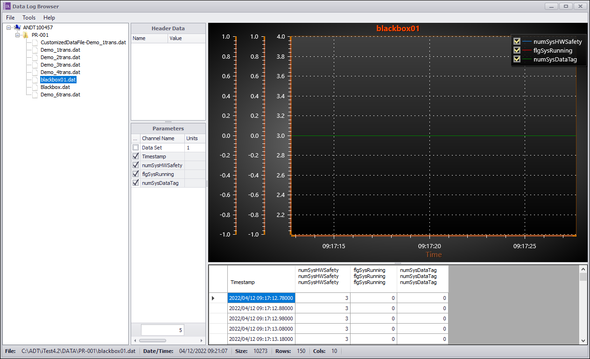
You can use keyboard and mouse combinations to perform a variety of actions in the chart. The following tables describe the different functionality possible:
Mouse Controls
| Action | Button | Result |
| Double-click | Left | Displays menu options for restoring, printing, and displaying X Cursors, etc. |
| Hold-Drag | Left | Zooms in on a specific area. |
| Scroll Up/Down | Middle | Scroll up zooms vertical and horizontal axes in. Scroll down zooms vertical and horizontal axes out. |
| Hold-Drag-Release | Right-click to hold Left-click to release |
Pans chart. |
Vertical Axis Controls
| Action | Button |
| CTRL + Scroll | Controls the vertical axes. Scroll up zooms vertical axes in and scroll down zooms vertical axes out. |
| CTRL + Left-click | Zooms the vertical axis (axes) in incrementally. |
| CTRL + Right-click | Zooms the vertical axis (axes) out incrementally. |
Horizontal Axis Controls
| Key Combination | Button |
| SHIFT + Scroll | Controls the horizontal axis. Scroll up zooms horizontal axis in and scroll down zooms horizontal axis out. |
| SHIFT + Left-click | Zooms the horizontal axis in incrementally. |
| SHIFT + Right-click | Zooms the horizontal axis out incrementally. |
Horizontal and Vertical Axes Controls
| Key Combination | Description |
| CTRL + SHIFT + Scroll | Controls both horizontal and vertical axes simultaneously. Scroll up zooms axes in and scroll down zooms axes out. |
| CTRL + SHIFT + Left-click | Zooms both axes in incrementally. |
| CTRL + SHIFT + Right-click | Zooms both axes out incrementally. |
In addition to the keyboard/mouse combinations above, you can scale the axes by using the resize markers at the beginning or top of each axis. By selecting the marker, you can then drag your mouse up or down to modify the scaling of the individual axis.
Resize Markers
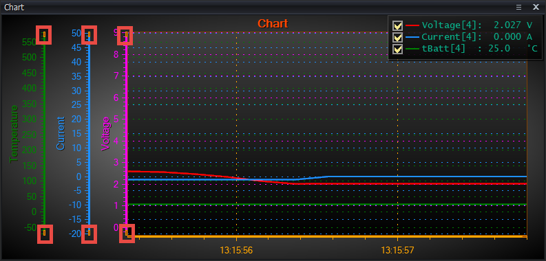
If you double-click within the chart, the following options display and can be used to modify the chart view:
Chart Options
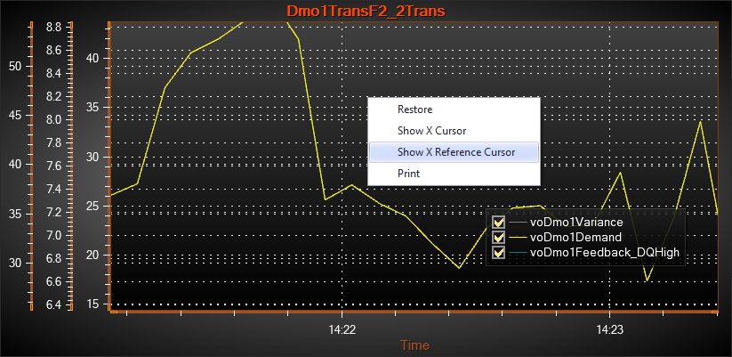
Chart Actions and Descriptions
| Action | Description |
| Restore | Returns the chart to its original size. |
| Show X Cursor | Shows a vertical line and digital readout of the value of each series crossing that value. This line can be moved around the chart to inspect the data at any chart position. Does not apply to X-Y charts (x-axis is a channel). |
| Show X Reference Cursor | Shows another X cursor line to use as a reference for calculating the difference with the X Cursor. This is denoted by delta in the call out that appears. |
| Prints a paper copy of the plot. |
By right-clicking a column header in the table view, you can further customize your chart.
Right-Click Options
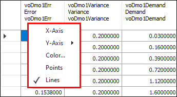
Right-Click Option Descriptions
| Option | Result |
| X-Axis | Assign the channel as the X-axis. |
| Y-Axis | Merge the channel onto another Y-axis. Use the New option to separate the channel onto its own axis. Option is disabled if the channel is assigned as the X-axis. By default, only channels with the same units can be on the same Y-axis. This can be overridden by editing the DLBAxisMixEmptyUnits config.ini setting. Refer to the DLBAxisMixEmptyUnits entry in the ConfigINI Options documentation for more information. |
| Color | Changes the color of the lines on the chart. Option is disabled if the channel is assigned as the X-axis. |
| Points | When enabled, the chart displays the data points. If Lines are also enabled, then the data points will display on a solid line. Option is disabled if the channel is assigned as the X-axis. |
| Lines | When enabled, the chart displays a solid plot line. If Points are also enabled, then the data points will display on a solid line. Option is disabled if the channel is assigned as the X-axis. |
Data Log Browser supports video playback functionality. This feature works in conjunction with the VideoCapture driver, which records video and captures channel data simultaneously. The VideoCapture driver saves recorded video data as an .mp4 file and channel data as a .dat file. You can then use the Data Log Browser to playback the video and compare the logged channel data to what was occurring in the test cell at the time of the recording.
There are two ways to display videos with a data file:
VideoFileName= header item followed by the name of the video file (e.g., VideoFileName=Ramp1_2Transient.mp4).When you select a data file with an associated video file from the tree bar in Data Log Browser, the video file and the chart for data points open in the right side of the application. The section with the video contains buttons and a slider for managing the progression of the video. To synchronize the video and chart, select a point on the data table. The left-located parameters determine the data table columns. In the example below, a data file with video has been opened with parameters selected.
Video Playback
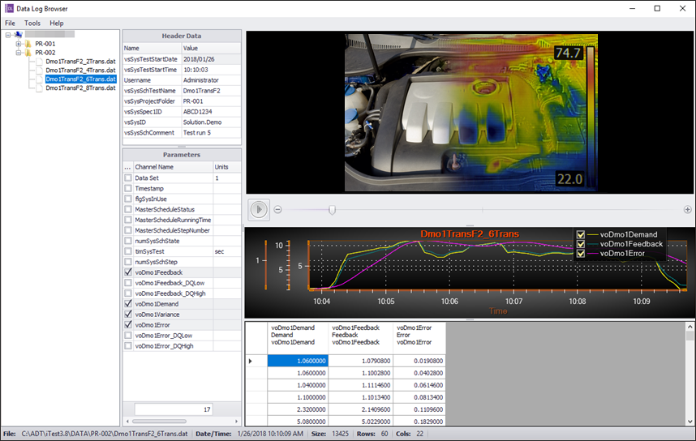
To expand the height and width of the video, hover over the space between the chart and the video player. Select and drag the marked section up or down to reduce or expand the video size. This will also modify the size of the Results section.
Change Video Size
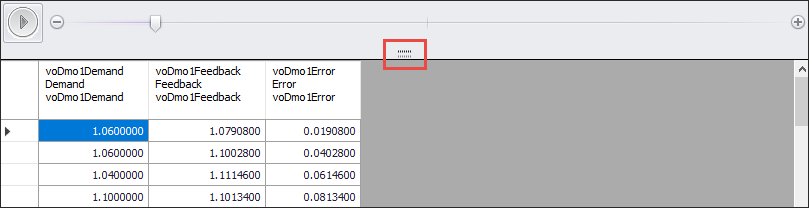
Video Playback Button Descriptions
| Button | Description |
| Starts the video. When the video is started you cannot select a different file, but you can modify which channels are selected in the Parameters section. | |
| 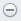 | Reverts the video back one frame. |
| Moves the video forward one frame. | |
| 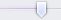 | Modifies the position of the video. Select the cursor and drag it forward and backward to the location in the video you want to view. |
By default, video playback begins at the beginning of the data file, but you can specify a channel name to control the video start position. This channel enables you to sync the video's start time to a point in the data file. The video starts playing when the channel's value is greater than 0.5.
There are two methods for specifying the channel name to use: header entry in the data file or powertek.ini option. Both of these options use the VideoTriggerChan keyword.
VideoTriggerChan=<ChannelName>
The following data file shows the VideoTriggerChan entry set to the voVcap1Sine channel. In this example, the video will begin playing on the data row where the value of voVcap1Sine is 0.56.
VideoFileName=Run_3.mp4 VideoTriggerChan=voVcap1Sine 1 PARAMS Date Time voVcap1Sine 1 UNITS YYYY/MM/DD HH:MM:SS.SSS 1 1522238075.630000 Vcap1Log T DATA 2018/03/28 07:54:35:.630 0.28 1 1522238075.730000 Vcap1Log T DATA 2018/03/28 07:54:35:.730 0.56 1 1522238075.830000 Vcap1Log T DATA 2018/03/28 07:54:35:.830 0.79 1 1522238075.930000 Vcap1Log T DATA 2018/03/28 07:54:35:.930 0.94 1 1522238076.030000 Vcap1Log T DATA 2018/03/28 07:54:36:.030 1.00 1 1522238076.130000 Vcap1Log T DATA 2018/03/28 07:54:36:.130 0.96 1 1522238076.230000 Vcap1Log T DATA 2018/03/28 07:54:36:.230 0.83 1 1522238076.330000 Vcap1Log T DATA 2018/03/28 07:54:36:.330 0.61
|
NOTE: | You can override the powertek.ini option and start the video at the beginning of the video file by adding a blank VideoTriggerChan entry to the file header. |